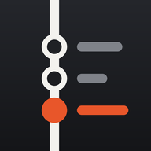

订阅管理 · 续费与发薪日提醒
使用帮助与指南
发薪日前会扣走多少钱：按日期顺序列出每笔即将到来的续费。
使用步骤
- 添加订阅项目轻点 +，填写名称、金额、币种、周期、首次扣费日期、分类、银行卡以及分摊人数；如有免费试用可开启并设置结束日。
- 查看时间线与发薪日区间时间线标签按日期排列所有扣费并显示累计总额。在设置中设置发薪日后，时间线会按发薪周期分段统计。
- 未来调价与单次扣费调整记录即将生效的新价格及起始日，不影响之前记录；也可以针对某一次扣费选择跳过或填写单次金额。
- 暂停、体检与取消节省暂停期间不计入总额也不发提醒；在服务商处取消订阅后再标记为已取消，即可在年度标签统计节省金额。
常见问题
应用会自动帮我退订吗？
不会。请先前往服务商或 Apple 订阅设置取消，再在应用中标记为已取消。
会读取银行账单或电子邮件吗？
不会。本应用不连接银行也不读取邮件，仅记录你手动输入的内容。
支持多种货币吗？
支持。不同货币会分别汇总统计，不会联网自动换算汇率。
免费版与 Pro 有何区别？
免费支持最多 5 项订阅、时间线、发薪日统计、调价预告、桌面/锁屏小组件、体检、备份文件和 Siri 问答。订阅管理 Pro 为一次性买断，解锁无限订阅、本地通知提醒、年度图表与 CSV 导出。
备份恢复与退款
可在设置中保存备份或从备份恢复，换机后点击恢复购买即可恢复 Pro；退款请通过 Apple 的 reportaproblem.apple.com 申请。
支持与联系
如有问题或建议，请联系：hayriodabas@gmail.com